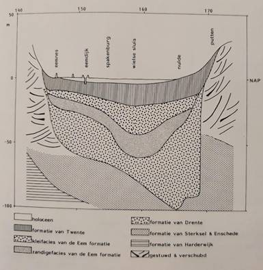
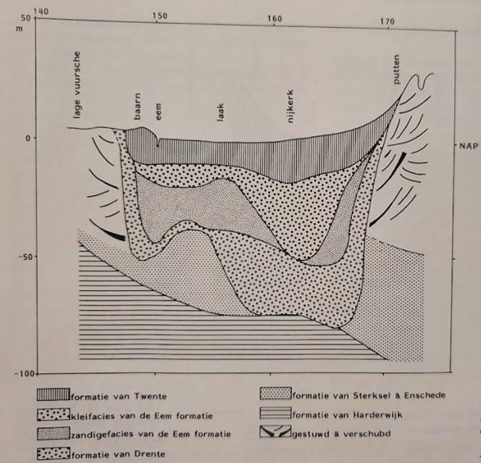
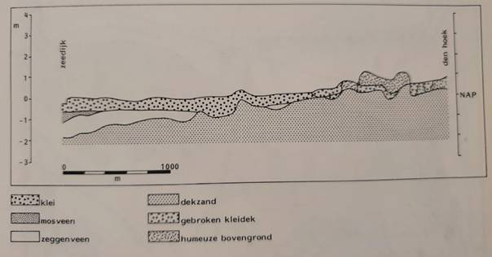

De bovenste
100 meter van de bodem van Arkemheen bestaat uit een aantal gestapelde lagen.
Interessant is dat deze lagen niet een mooie gladde laag vormen, maar omhoog of
omlaag lopen, verschillen van dikte, en dat niet alle lagen overal aanwezig
zijn. Er kan onderscheid worden gemaakt in
·
Zandlagen.
·
Veenlagen.
·
Kleilagen.
Deze
verschillende lagen hebben in de wetenschap specifieke namen gekregen, zoals de
Formatie van Maassluis, de formatie van Harderwijk, van Enschede, etc.
·
De
onderste laag zand en klei is afgezet door de zee, en kan wel enkele honderden
meters dik zijn. Dit wordt de formatie
van Maassluis genoemd. De bovenzijde van deze afzetting ligt in de
zuidelijke Vallei op 100 m beneden NAP en in de noordelijke Vallei bij Nijkerk
ligt de top op 200 m beneden NAP.
·
De
lagen bovenop de zeeafzetting zijn van een andere samenstelling, en zijn door
rivieren afgezet. Door grote veranderingen in het klimaat verschoof de loop van
de rivieren, waaronder de Maas en Rijn. Deze zetten lagen klei en grof zand af
boven op de door de zee afgezette klei/zanden. Deze grove zanden hebben een
andere samenstelling dan de zand/kleilaag afgezet door de zee. Boven op de door de zee afgezette laag ligt
de formatie van Harderwijk. Daar
bovenop de formatie van Enschede. Er
wordt van uit gegaan dat de Maas het gebied van Arkemheen hebben gestroomd.
Zijn stroomdal liep door de Gelderse Vallei.
·
De
zanden van de formatie van Enschede
vinden we in de heuvels van onder andere de Veluwe en de Utrechtse Heuvelrug.
Er wordt vanuit gegaan dat dit door grote ijsformaties vanuit het noorden zijn
opgestuwd. Doordat de Gelderse Vallei al lager lag kon het ijs zich daar
gemakkelijk voortbewegen. Hierdoor ontstond een diepe geul, die bij Nijkerk op
circa 60m diepte lag. Bij het smelten van het water werd materiaal aangevoerd
dat een deel van de Gelderse Vallei opvulde. Dit wordt de formatie van Drente genoemd. De onderzijde van deze formatie is
een voor water niet doorlatende laag. De lagen onder de formatie van Drente noemen
we het diepe grondwater voerende pakket.
·
Bovenop
de door de rivieren afgezette zanden bevindt zich weer een laag die door de zee
is afgezet. Dit is dan ontstaan doorat in de volgende periode de zeespiegel steeg
waardoor de zee weer binnendrong in ons gebied, en weer zand- en kleilagen afzetten.
Deze laag, de Eemafzetting genoemd,
loopt vanuit het zuiden af, totdat deze bij Nijkerk tussen de 20 en 50m diepte:
in het midden van de Vallei op 50m, aan de ronden tot 20m diep. De eemklei
belemmert de verticale beweging van grondwater. De watervoerende delen van de formatie van Drente en de Eemformatie vormen samen een
watervoerende laag, het zogenaamde middeldiep
grondwaterwater voerende pakket.
·
De
laag bovenop deze zeeafzetting bestaat uit fijne dekzanden. Hierbij wordt er
van uitgegaan dat er een koude periode volgde, waarbij het ijs de Gelderse Vallei
niet bereikte. De droge winden bliezen het zand van de kale hoger gelegen
plekken naar de lager gelegen delen van de vallei. Hierdoor werd de vallei
verder opgevuld met dekzanden. Deze afzettingen, die ook veenlagen bevatten en
die in het oosten van de Vallei hoger liggen dan in het westen, worden
samengevat onder de Formatie van Twente. Deze ligt in de Arkemheen tot een
diepte van ca 10 tot 15m. Deze laag komt alleen langs de uiterste zuidrand van
Arkemheen (bij Putten) aan de oppervlakte.
·
Boven
op deze dekzanden ligt veen. Dit ontstond in nattere perioden. In die natte
periode rotte de afgestorven begroeiing weg, waardoor veen ontstond.
Uitgestrekte gebieden, en uiteindelijk het gehele Zuidzeegebied werd met veen
bedekt. Later brak de Noordzee binnen door zeegaten in de kust van Noord
Holland, waardoor over grote gebieden het veen werd weggeslagen waardoor meren
ontstonden, wat uiteindelijk het Almere vormde. Alleen aan de randen bleef veen
bestaand. De Eem, de Hierdense beek en ook de beken die vanuit de noordelijke
Vallei het water afvoerden, hadden hun benedenloop in het veenlandschap langs
de zuidelijke oevers van het Flevomeer. De mondingen van genoemde lopen lagen
aan het begin van de jaartelling zeer waarschijnlijk 5-10 km noordelijker dan
waar ze nu liggen.
Deze veenvorming vond met name plaats tot ca 1100. In die periode was er nog
geen sprake van een Zuiderzee (vroeger het Almere). De waterafvoer vanaf de
Veluwe was slecht, waardoor er in de lage gebieden van de Gelderse Vallei
moerassig gebied ontstond. De planten in dat gebied verteerden, waardoor er
veen ontstond. De dikte van de veenlaag wordt bepaald door de hoogte van de
onderliggende zandgrond en de hoogte van de waterstand.
·
Vanaf
de romeinse tijd werd het veen langs de randen van het Almere verder
afgebroken. Het veen in de polder werd ontgonnen, waarbij afwatering belangrijk
was. Hierdoor klonk het veen in. Op het resterende veen werd in zoet tot brak
water zware klei afgezet (de zogenaamde Duinkerken afzetting). Deze klei werd
in ca 200 jaar tussen ca 1100 en 1300.
·
In
de tweede helft van de 14e eeuw werd Arkemheen bedijkt. Pas in de 16e eeuw
verziltte het Almere en ontstond de Zuiderzee. Het aandeel van Zuiderzeeafzettingen
in de in ons gebied aan de oppervlakte liggende kleilagen is daardoor gering.
In de
volgende twee figuren zijn een paar doorsnedes gemaakt van de bodem samenstelling
van de Arkemheense polder.


Hier kijk je
als het ware vanuit de Gelderse Vallei bij Barneveld richting Nijkerk. Aan de
zijkant zie je de stuwwallen omhooglopen.
Door beide
figuren te vergelijken is duidelijk te zien dat de opbouw van de lagen niet
overal hetzelfde is.
